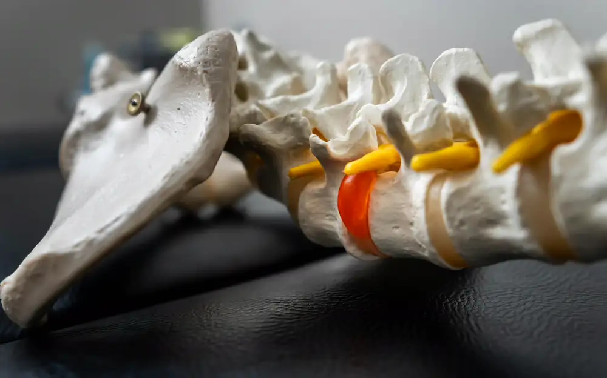
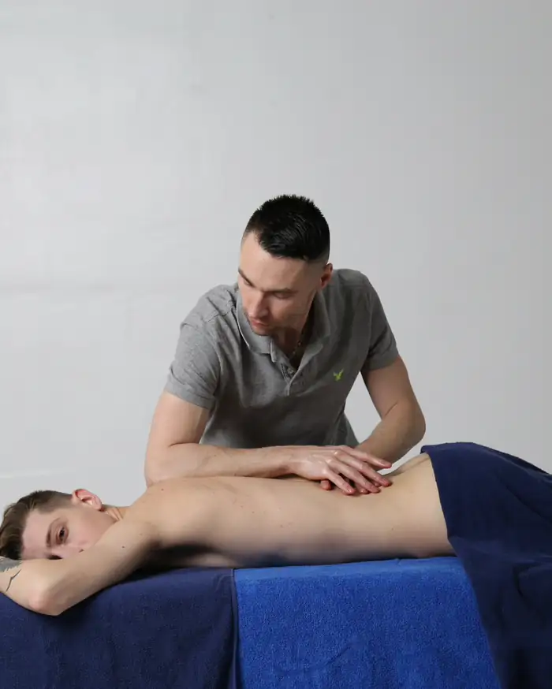

Real cases. Real relief, explained.
Chiro Core shows what is actually happening inside the body, and why one precise adjustment can change so much.
Watch on YouTube- 1.04M
- YouTube
subscribers - 350M+
- video
views
from around the world
Creating since 2016
The problems behind every case we break down
A closer look at every part of your spine
Cervical spine
Neck · C1–C7Seven small vertebrae carry the head. See cases of locked necks, sudden strain and pain that travels into the arm.
Watch neck casesThoracic spine
Upper & mid back · T1–T12Twelve vertebrae anchor the ribs and shape your posture. Stiffness here can limit how you turn, reach and sit.
Watch back casesLumbar spine
Lower back · L1–L5The largest, hardest-working vertebrae carry your weight, and sit behind many everyday back-pain stories.
Watch lower back casesPelvis & hips
Sacrum · coccyx · hipsWhere the spine meets the pelvis. See how hip and sacral movement connects to the rest of the body.
Watch mobility casesWhen an adjustment is worth a closer look
These are the situations our case videos return to again and again. Every body is different: a qualified practitioner decides what suits you after an assessment.
A sudden locked neck
Turning the head becomes painful or almost impossible, often overnight.
Back pain that keeps returning
Flare-ups that settle for a while, then come back.
Pain after a fall or injury
Sports knocks, slips and accidents that leave the body guarded.
Stiffness and limited movement
Joints that feel stuck after long periods of sitting or inactivity.
Pain that travels
Aches that spread from the spine into the arm, hip or leg.
Posture strain
Hours at a desk or on a phone, and the tension that follows.
Care for kids & pregnancy
Gentle, low-force approaches for smaller or changing bodies.
Real cases, watched by millions
Hand-picked from the channel’s 63 videos. Press any case to watch it right here.
View counts and lengths as shown on YouTube in October 2026.

then the adjustment
Every breakdown helps you understand, not just watch
- 1
A real person, a real problem
Each case starts with what brought the patient in and how it was affecting them.
- 2
What is happening inside
Anatomy in plain language: which joint, muscle or nerve is involved and why it hurts.
- 3
The adjustment itself
Top practitioners show advanced chiropractic and osteopathic techniques, including Gonstead.
- 4
Why it makes a difference
The science behind the change, so the result makes sense and isn’t just a moment to watch.
The core of chiropractic content
Chiro Core is a UK-based video channel that breaks down real chiropractic and osteopathic cases, showing what’s actually happening inside the body and why these adjustments can bring such immediate relief.
From severe neck pain and spinal misalignment to posture correction and mobility restoration, every video explains the science behind the treatment, so you’re not just watching, you’re understanding.
We feature top practitioners from around the world, with advanced chiropractic adjustments, osteopathy techniques and real patient outcomes.
- Explain it, don’t just show it
- Real practitioners, real outcomes
- Education first, always

- 1.04M
- YouTube subscribers
- 350M+
- video views
- 63
- full case videos
- 2016
- creating since
Questions people ask us
Can’t find your answer? Send us a message and we’ll point you the right way.
Ask a questionWhat is Chiro Core?
Chiro Core is a video channel that breaks down real chiropractic and osteopathic cases. Each video explains what is happening inside the body and why the treatment can help. The channel has over one million subscribers on YouTube.
Is Chiro Core a clinic? Can I book an appointment?
Chiro Core is an educational video channel, not a treatment clinic, so appointments can’t be booked here. For an assessment, please see a licensed chiropractor, osteopath or doctor near you.
Is this medical advice?
No. Everything on this site and in the videos is for education only. Results differ from person to person and manual therapy is not right for every case. Seek urgent medical care for sudden severe pain, new weakness or numbness, loss of bladder or bowel control, or pain after a serious accident.
Who are the practitioners in the videos?
Chiropractors and osteopathic practitioners from around the world. Open any video on YouTube to see who is featured and where to find them.
What is the Gonstead technique, and how is osteopathy different?
Gonstead is a chiropractic approach built on careful assessment and a precise adjustment of a specific restricted spinal segment. Osteopathy is a hands-on approach that often uses a wider mix of gentle mobilisation, stretching and soft-tissue work. Both appear in our videos.
Why does the spine “crack” during an adjustment?
The sound is usually caused by gas bubbles shifting in the fluid of a joint, not bones grinding. A louder sound doesn’t mean a better adjustment, and a quiet one isn’t a failed one.
How can I get in touch with Chiro Core?
Email chirocoreco@gmail.com or use the form below for collaborations, press and questions about the channel. We’re unable to give personal medical advice.
Questions, collaborations or press?
Send us a message about the channel, a collaboration or a partnership. We can’t give personal medical advice.